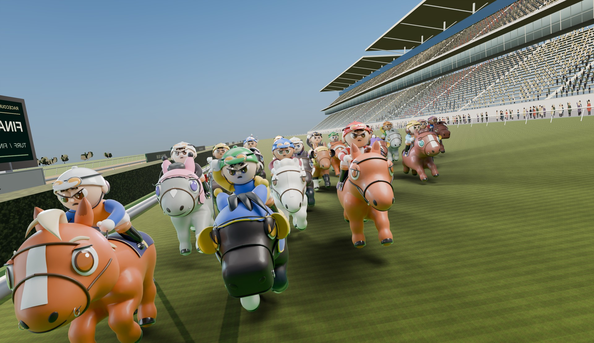
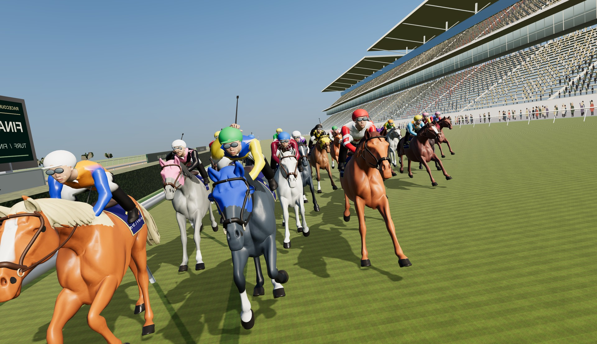
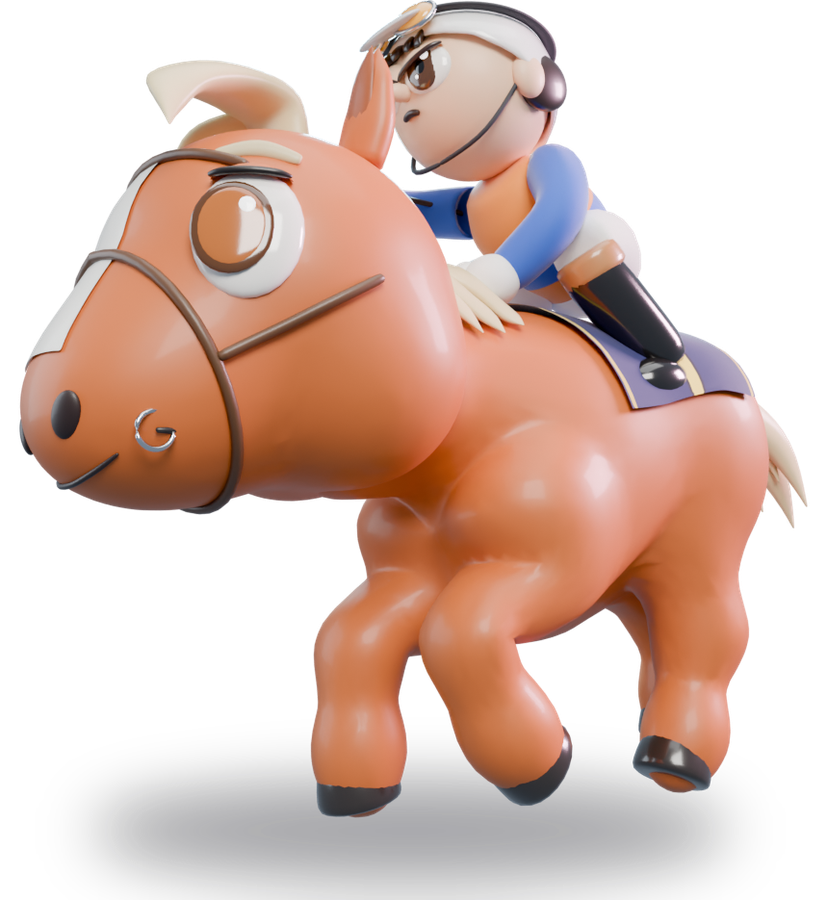
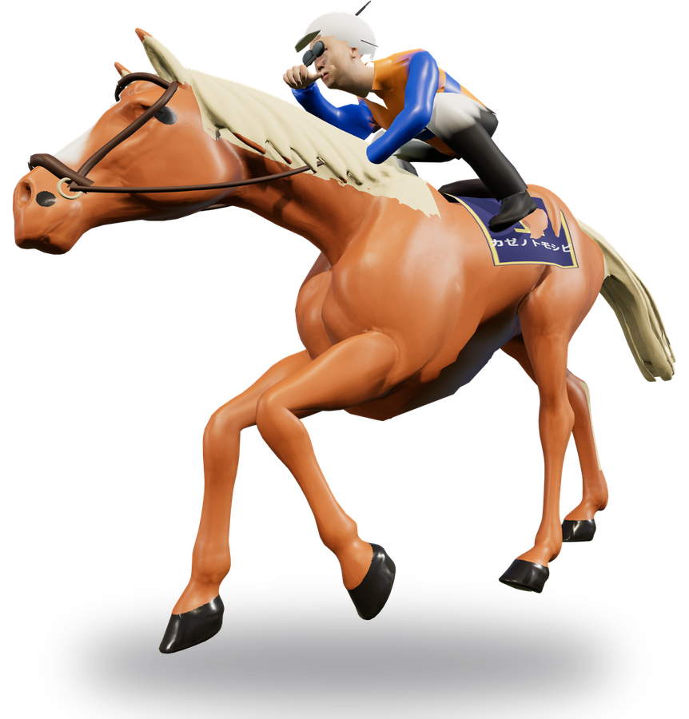
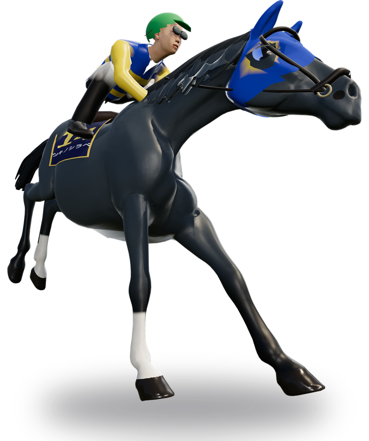
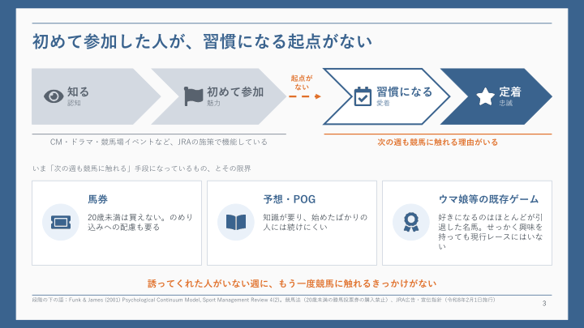
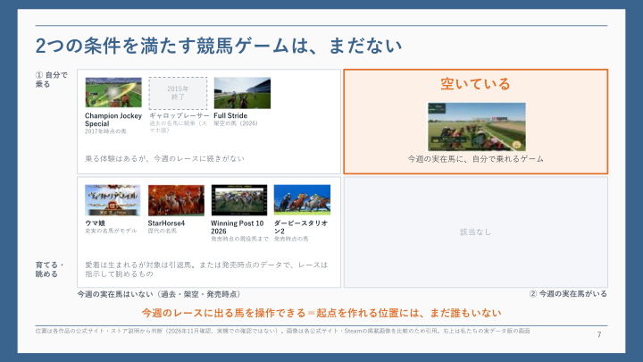
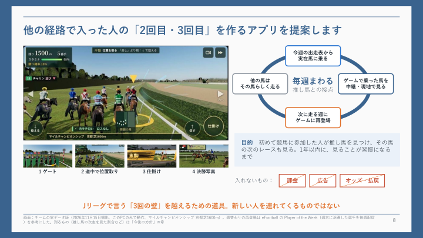
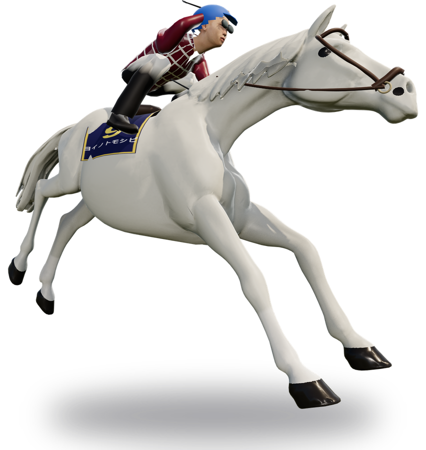
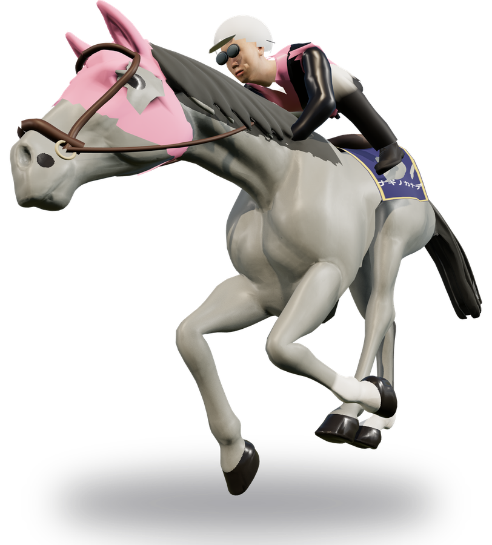

目次
01背景・課題
02分析の全体像
03今後の方針

5

中間発表 2026.11.29
全馬の展開を描き直す競馬ゲーム
マルチエージェント軌跡予測を応用した展開生成モデル RaceWM
慶應義塾大学大学院 理工学研究科 鈴木研究室
深野夏生、田中大梧、西川輝星、鈴木秀男

中間発表 2026.11.29
全馬の展開を描き直す競馬ゲーム
マルチエージェント軌跡予測を応用した展開生成モデル RaceWM
慶應義塾大学大学院 理工学研究科 鈴木研究室
深野夏生、田中大梧、西川輝星、鈴木秀男













影響し合う複数の主体の、この先の動き（軌跡）を予測する手法
周りの車や歩行者を主体とみなし
この先の動きを同時に予測
例えば、交差点の車や歩行者が次にどう動くかを何通りも予測できる
出走馬を主体、コーナーごとの通過順位を軌跡とし、ゴールまでの順位とタイムを予測する
どのデータで、何を軌跡にするかを決める
全馬にそろう通過順位とタイムを軌跡にする
タイムと順位のつながりを保ったまま、全馬の展開を何通りも描く RaceWM を構築する
その結果、RaceWM はST より実際のレースに近い展開を描ける（STEP 04 で比べる）。
順位が分かるたびに描き直し、展開の広がりと勝つ確率の動きを 1 つのレースで描く
順位が分かるほど展開の束が絞られ、1着の馬番 14 が勝つ展開は8.6%から57.4%に増えた
全頭の最終順位の予測と展開の本物らしさの 2 つの物差しで、既存の手法と同じレースで比べる
順位の当たり具合は ST とほぼ同じ、展開の本物らしさは全段階で RaceWM が良い


ご清聴ありがとうございました
Thank You for Your Attention
ご清聴ありがとうございました
Thank You for Your Attention
Appendix
ほぼ全馬にそろう通過順位とタイムを軸に、レースの展開を描く使い方を選んだ
入力を読み、乱数から全馬の展開を何通りも描く。分かった順位で描き直す
発走前に分かる情報だけを、1 頭ずつ数字にする
どの時点から描くかを 1 つのモデルで受け持てるよう、見せるコーナーを 3 通りに混ぜて学ぶ
描いた束が実際に近く、しかも固まらずに散らばるほど良い
オッズを出発点に、全馬を見比べた状態で補正し、温度で鋭さを合わせる
描いた展開の勝ち馬の割合が目標とずれる分だけ重みを付けて引き直し、目標にそろえる
全員を同時に予測する代表手法。最新の 1 位ではないので、新しい手法との比較を次に行う
ST は候補から選んで値ごとに散らし、RaceWM は乱数から全体を一度に描く
ゲームで使う 16 本は約 0.05 秒。同じ条件なら ST の約 1/5 の時間
馬ごとに「何着以内か」の確率と実際の差を測る。低いほど良い
描いた 32 本の中で、実際の値がよくある値かを項目ごとに測る
1 頭ずつの確率は同じ形。ST は値ごとに別々に散らすので、値どうしのつながりで差が付く